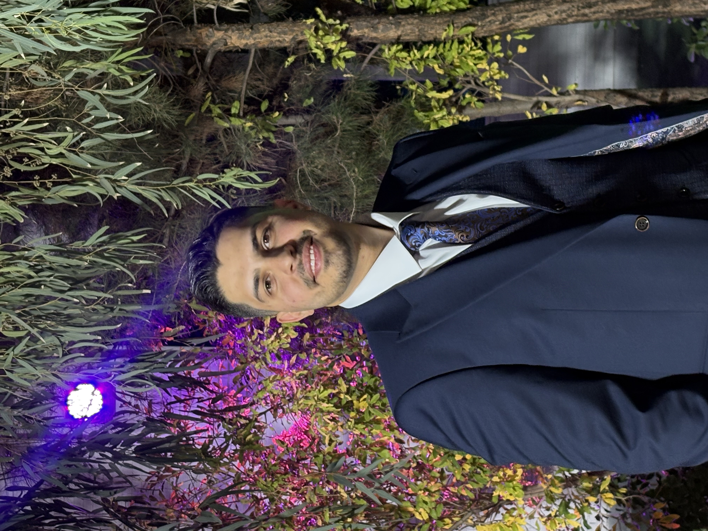
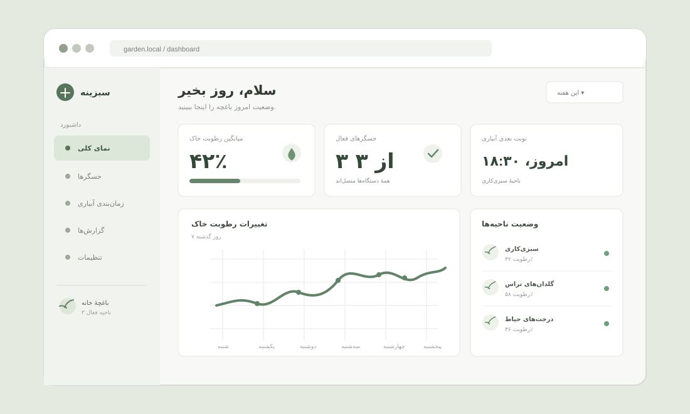
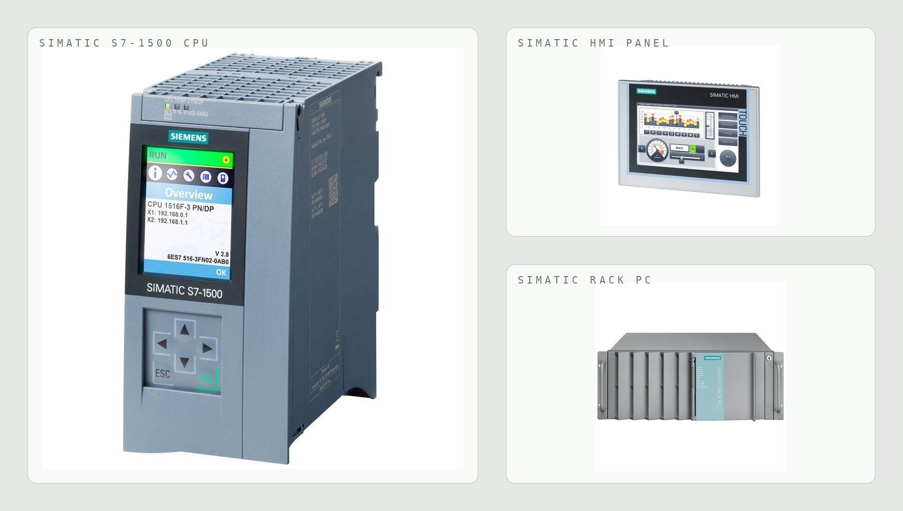
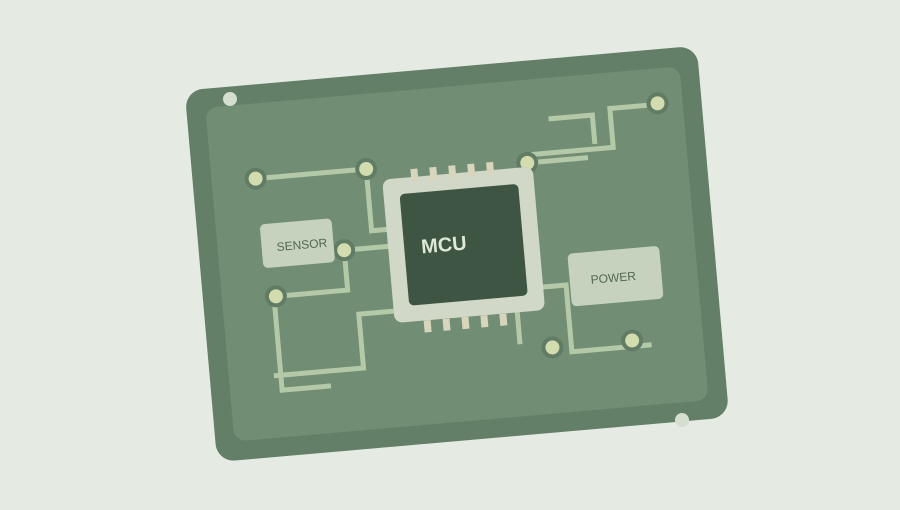
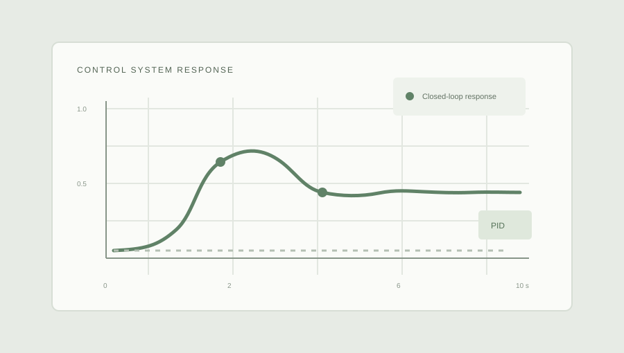
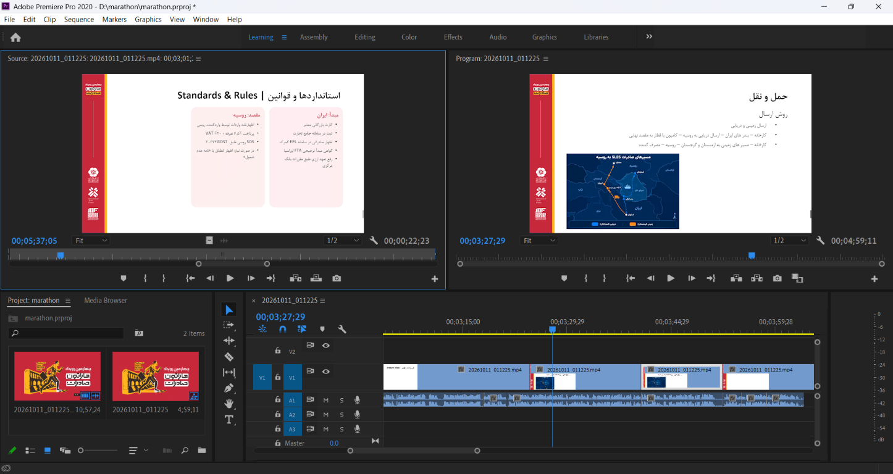

اتوماسیون صنعتی
برنامهنویسی PLC و طراحی رابطهای اپراتوری برای فرایندهای صنعتی.
سید علی خدامی / اصفهان، ایران
اتوماسیون صنعتی طراح سایت فروشگاهی اینترنت اشیاء و Embedded Systems
مهندس اتوماسیون صنعتی در IRISA؛ علاقهمند به برنامهنویسی، تحول دیجیتال و ساخت راهکارهایی که در دنیای واقعی به کار میآیند.

صنعت · سختافزار · وبدربارهٔ من / ۰۱
برنامه نویس اتوماسیون صنعتی و علاقهمند به توسعهٔ نرمافزار.
• فارغ التحصیل مهندسی برق کنترل از دانشگاه صنعتی اصفهانزمینههای کاری و ابزارها / ۰۲
ترکیبی از اتوماسیون، الکترونیک و توسعهٔ نرمافزار
برنامهنویسی PLC و طراحی رابطهای اپراتوری برای فرایندهای صنعتی.
نمونهسازی راهکارهای متصل با میکروکنترلرها و طراحی بردهای الکترونیکی.
ساخت رابط وب با تمرکز بر ساختار درست، واکنشگرایی و تجربهٔ کاربر.
راهاندازی و توسعهٔ وبسایتهای محتوایی و فروشگاهی با وردپرس.
ابزارهای برنامهنویسی و ارتباط با سرویسها برای ساخت پروژههای کاربردی.
تجربهٔ کاری / ۰۳
تجربهٔ حرفهای من از اتوماسیون صنعتی میآید؛ جایی که نرمافزار باید با تجهیزات و شرایط واقعی هماهنگ باشد.
ایران · اتوماسیون و کنترل صنعتی
مشارکت در توسعهٔ نرمافزارهای اتوماسیون صنعتی، برنامهنویسی PLC و طراحی صفحات HMI. فعالیت در زمینهٔ سیستمهای کنترلی و راهاندازی صنعتی، با کار روی تجهیزات و فناوریهای زیمنس از جمله TIA Portal و WinCC.
ایران · اتوماسیون صنعتی
آشنایی با اصول سیستمهای کنترل صنعتی و نحوهٔ کار با تجهیزات اتوماسیون، همراه با همکاری در بررسی پروژهها و مستندسازی فنی. در این دوره بیشتر با PLC، سنسورها، رابطهای انسانی و شیوهٔ هماهنگی بین تیم فنی و نصبکاران آشنا شدم و درک بهتری از مشکلات واقعی اجرا در محیطهای صنعتی پیدا کردم.
ایران · خانه هوشمند
بررسی نیاز مشتریان، معرفی محصولات و راهحلهای مرتبط با خانهٔ هوشمند و هماهنگی بین مشتری و تیم فنی برای ارائهٔ پیشنهاد مناسب. در این نقش، تعامل مستقیم با مشتریان و پیگیری سفارشها به من کمک کرد تا با نیازهای بازار و نحوهٔ ارائهٔ راهحلهای فنی آشنا شوم.
پروژهها / ۰۴
از نمونههای اینترنت اشیا و وب تا پروژههای دانشگاهی و صنعتی. جزئیات پروژههای محرمانه را منتشر نمیکنم.

پروژهٔ شاخصاینترنت اشیا / سختافزار و وب
در این پروژه، اندازهگیری رطوبت خاک به زمانبندی آبیاری و پایش از راه دور وصل میشود. داشبورد وب، وضعیت حسگرها و نوبت بعدی آبیاری را یکجا نشان میدهد.
 ۰۲
۰۲
برای کارگاه ونزو، کاتالوگ مبلمان و مسیر سفارش اختصاصی را در قالب فروشگاهی واکنشگرا کنار هم آوردم؛ تا مشتری بتواند مدلها را ببیند و برای سفارش سفارشی اقدام کند.
مشاهدهٔ سایت
۰۳بخشی از تجربهٔ کاری من شامل برنامهنویسی PLC، طراحی HMI و راهاندازی سیستمهای کنترلی است. بهدلیل محرمانهبودن پروژهها، جزئیات اجرایی منتشر نشده؛ تصویر این کارت بخشی از تجهیزات اتوماسیون صنعتی را نشان میدهد.

۰۴در این مجموعه، طرح بردها و نمونههای سختافزار نهفتهای را میبینید که با EasyEDA برای ایدههای الکترونیکی و اینترنت اشیا آماده شدهاند.

۰۵چند تمرین و پروژهٔ دورهٔ کارشناسی که مفاهیم مهندسی کنترل و اتوماسیون را از درس به مسئلههای قابلتحلیل نزدیک کردند.

۰۶نمونههایی از تدوین ویدیوهای معرفی محصول و محتوای تبلیغاتی؛ بهزودی جزئیات هر سفارش و نسخهٔ نهایی را اینجا اضافه میکنم.
برای فروشگاه اینترنتی / ۰۶
اگر برای کسبوکارتان به سایت فروشگاهی نیاز دارید، دربارهٔ نیازها و روند کاریتان صحبت کنیم.
دستهبندی و صفحهٔ محصولی که پیدا کردن و مقایسه را ساده کند.
فرایندی روشن برای سفارشهای آماده یا درخواستهای سفارشی.
ساخت فروشگاه با ابزارهای آشنا و امکان مدیریت محتوای روزمره.
تحصیلات / ۰۷
استعدادهای درخشان شهید اژهای ۲
دانشگاه صنعتی اصفهان · اصفهان، ایران
چند نقطهٔ عطف / ۰۸
اینها ایستگاههای مسیر مناند؛ ترتیبشان مهمتر از تاریخ دقیق هرکدام است.
پایان دورهٔ کارشناسی مهندسی کنترل و شکلگیری علاقهام به سیستمهای کنترلی و اتوماسیون.
ترکیب میکروکنترلر، سنسور و نرمافزار برای ساخت نمونههای کاربردی؛ از جمله سامانهٔ آبیاری هوشمند.
حرکت از علاقه به برنامهنویسی به سمت ساخت رابطهای وب و پروژههای قابلاستفاده.
آغاز تجربهٔ حرفهای در اتوماسیون صنعتی و کار با سیستمهای کنترل در محیط واقعی.
تجربهٔ طراحی کاتالوگ محصول و فرایند سفارش برای کسبوکارهای واقعی.
دورهها و گواهیها / ۰۹
دورهٔ تخصصی
آشنایی و آموزش مبانی برق صنعتی.
کسباتور
برنامهٔ آموزشی «مدیرعامل آینده» از کسباتور.
توسعهٔ وب
مبانی ساختار، طراحی و برنامهنویسی وب.
زبان انگلیسی
ادامهٔ یادگیری زبان؛ سطح فعلی: متوسط رو به بالا.
ارتباط / ۱۰
اگر دربارهٔ اتوماسیون، اینترنت اشیا یا توسعهٔ وب صحبت میکنید، خوشحال میشوم پیامتان را بخوانم.
s.alikhodami@gmail.comنشانی ایمیل و حسابهای اجتماعی را با اطلاعات واقعی خود جایگزین کنید.